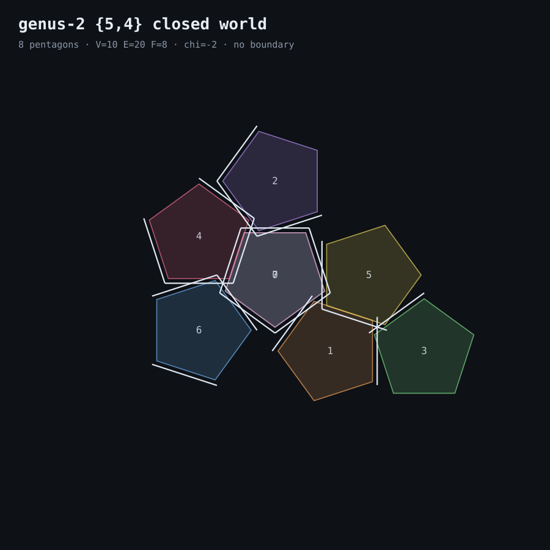

genus-2 {5,4} closed world

this is the smallest honest closed {5,4} world: eight regular pentagons glued edge-to-edge into a two-holed surface. every edge is shared by exactly two faces, every vertex has four pentagons around it. nothing leaks, because there's no outside.
the drawing is a net — the surface cut open and laid flat. the gaps and overlaps between tiles are the cuts. you can't lay a genus-2 surface flat without them; that's the whole point of genus 2.
faces are glued by the explicit edge pairing in genus2_faces.json. life B2S3 runs on the 8 faces — all 9 of its two-cycles turn out to be wrapped movers under a fixed-point-free half-turn of the map (see the automorphism test). so the closed world doesn't only blink: it moves, folded through itself.